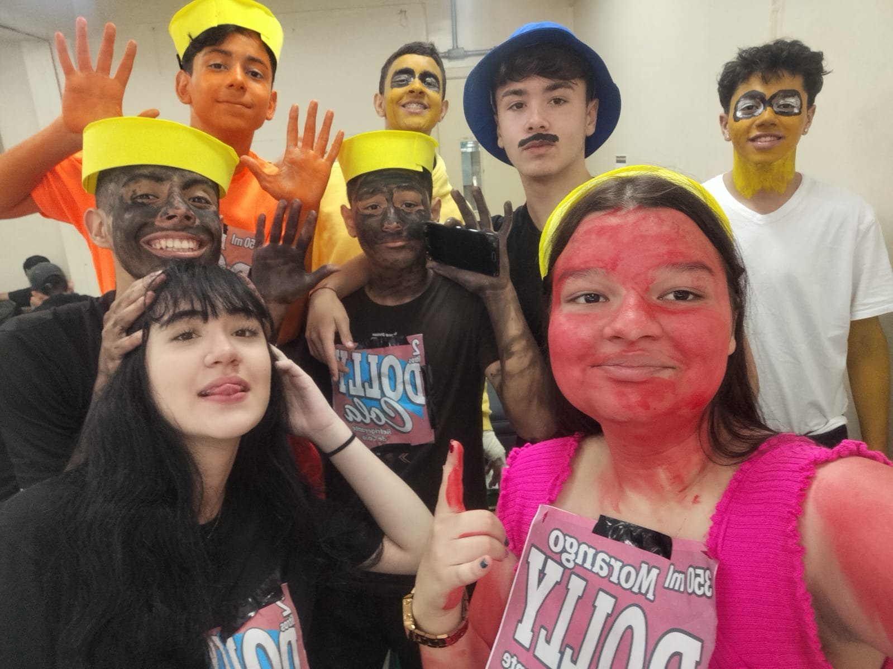
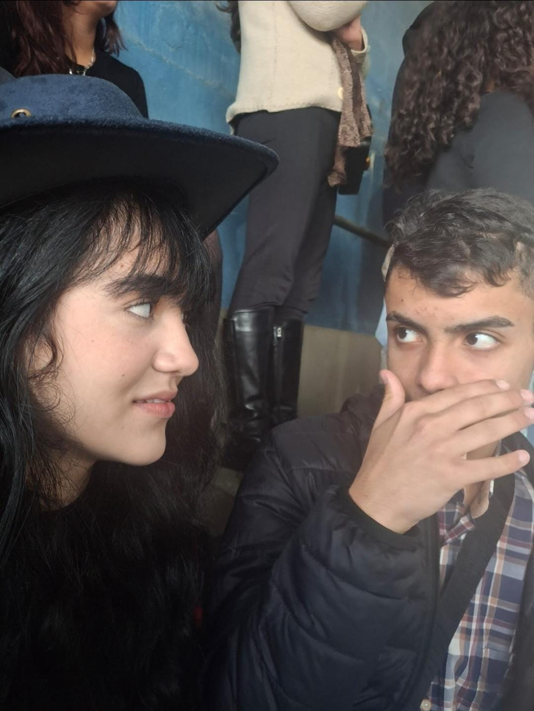
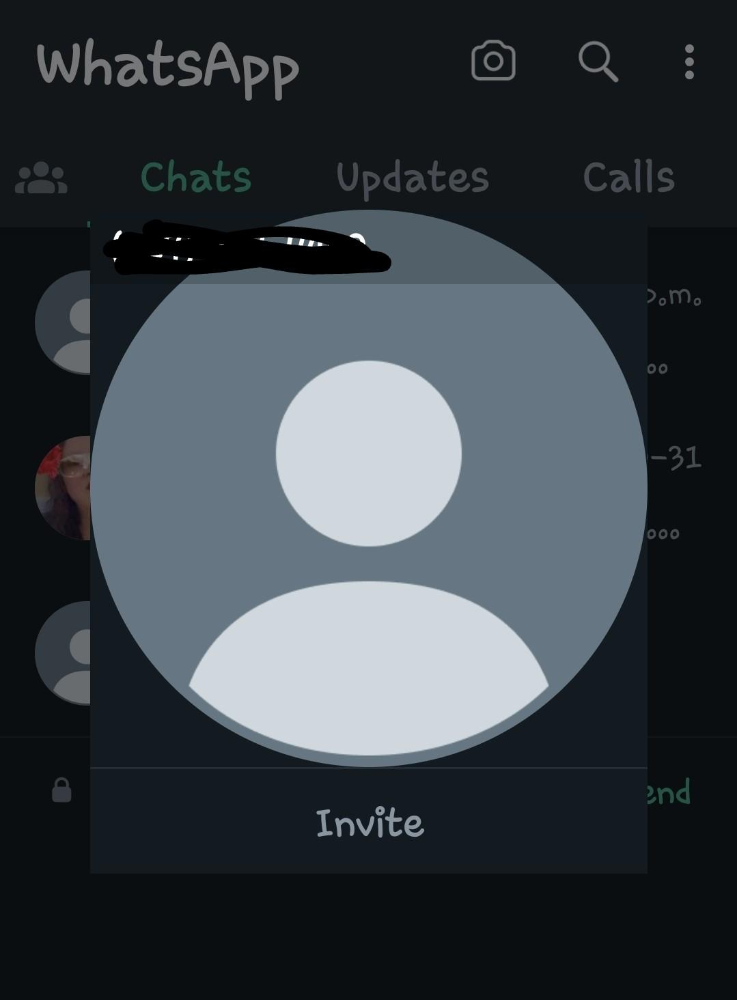
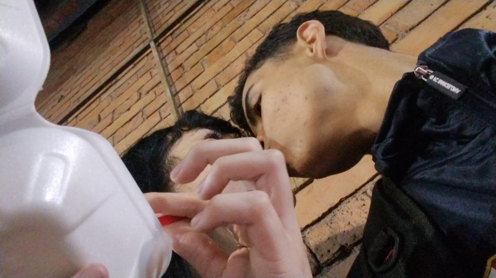
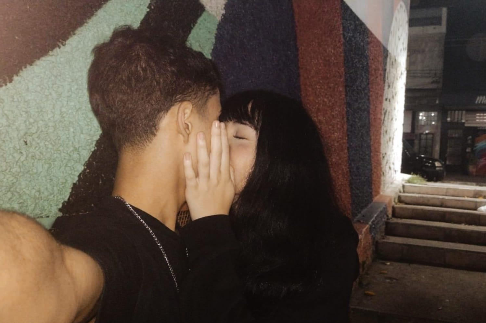
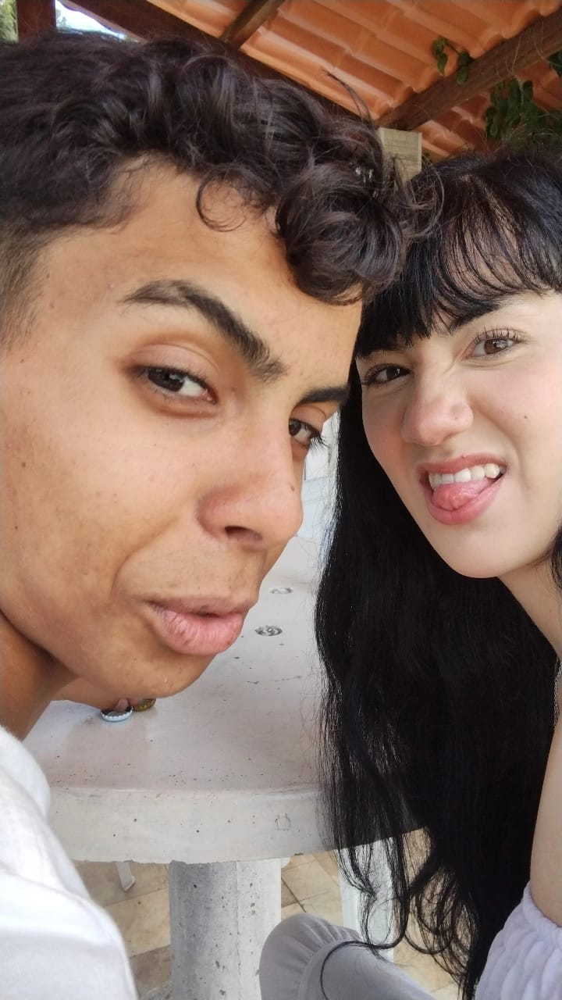
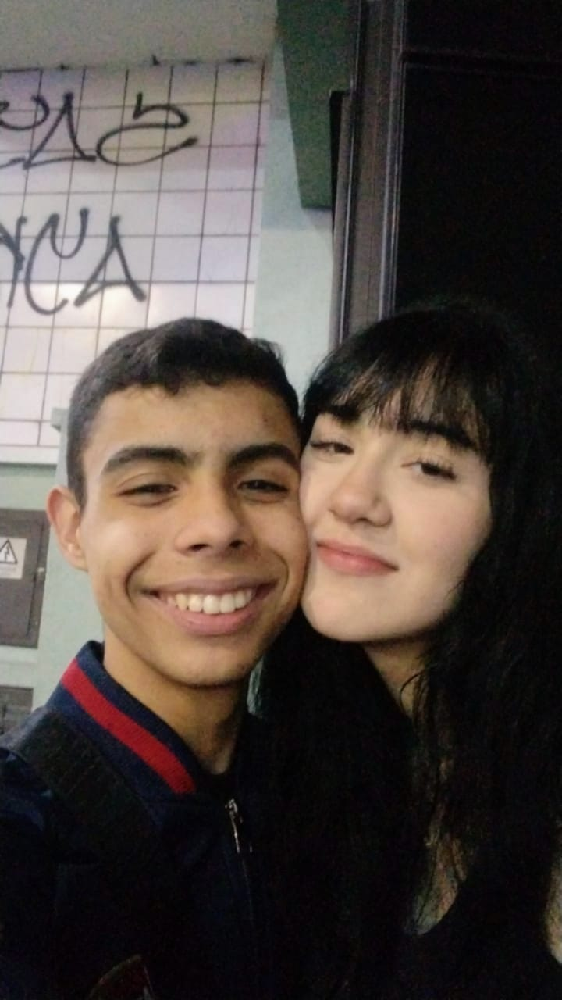
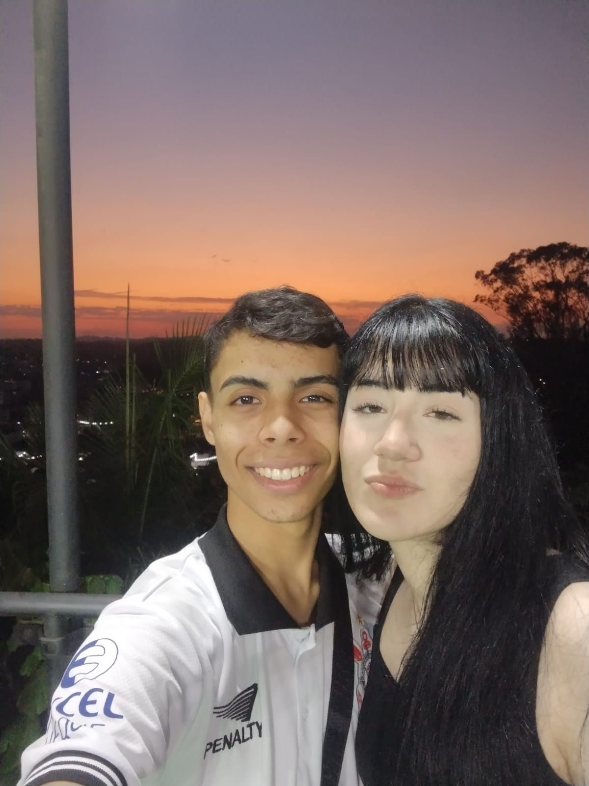
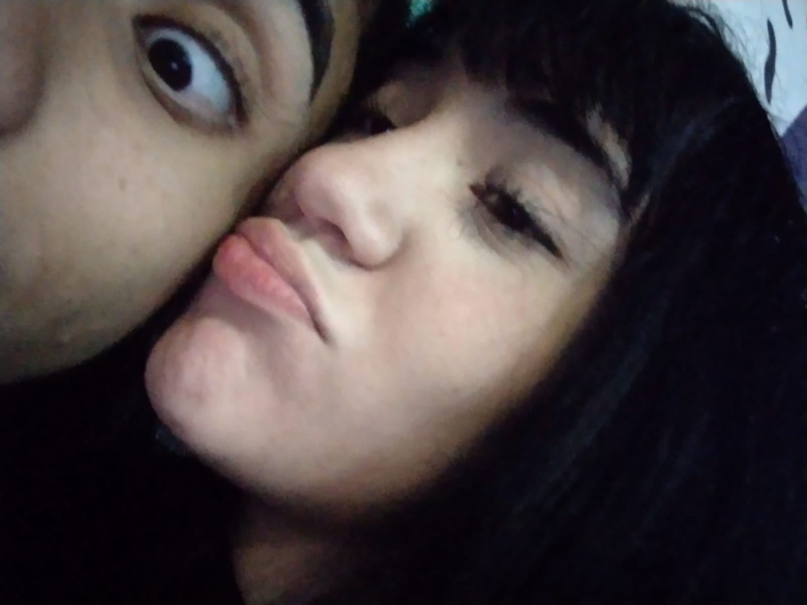

Feliz aniversario meu AMOR
Estamos juntos há:
carregando...
❤️ E continua...❤️

Feliz aniversario meu amor, que hoje seja um dia igual a como você é: feliz, iluminado, com muitos sorrisos e com
muito amor e paz;
também quero te agradecer por ser essa pessoa maravilhosa que você é, por estar sempre ao meu lado e por me fazer
tão feliz;
eu te amo muito e espero que esse dia seja inesquecível e que você se sinta muito amada e especial, porque você
merece tudo de melhor que a vida pode oferecer.
Estou fazendo essa "surpresa" para você, espero que goste pois fiz com muito carinho!❤️
Sim peguei as piores fotos nossas kkkk
Começo de uma amizade

Dia das crianças
Tudo começou ali naquela mesa da escola, quando eu puxei papo com você pela primeira vez. Eu meti o louco ,falando que você era mãe para o Davi, e você me olhou com aquela cara de quem não sabia se ria ou se me batia (você me bateu kkk). A partir daquele dia começou a crescer um sentimento muito grande .
Antes de um relacionamento


Antes daquele dia já havia um sentimento especial entre nós, mas foi naquela festa junina que tudo mudou. Foi quando eu tomei uma "atitude" (meia atitude kkk) mas foi a partir daquele momento que tudo começou a mudar comecei a não só te ver como uma amiga.

Da festa-junina em diante, continuamos “ficando” por mais ou menos 1 mês, até chegar as férias de meio de ano. Nela aconteceu um pequeno fato, onde nós ficamos 1 mês sem se falar por causa de uma demora de mensagens (quase 12 horas, chapei). Foi o momento mais conturbado do nosso relacionamento; foi quando eu pensei que ia acabar a porra toda. Quando as aulas voltaram, tinha total certeza de que não iria rolar mais nada entre a gente. Mesmo você falando que queria reatar, eu não estava me sentindo bem comigo mesmo naquele momento. até você voltar e me mostrar o que você sentia era real.
O nosso relacionamento

.jpg)
E depois de altos e baixos, finalmente começamos a namorar. Por tudo que vivemos até ali, acabei te pedindo em namoro (e um pouco de pressão também kkk). Foi um passo importante pra mim, porque depois de tudo o que passamos, eu percebi que não queria mais te ter só por perto, eu queria te ter comigo de verdade. Mesmo com inseguranças e dificuldades, eu escolhi tentar, porque o que a gente tinha significava muito pra mim.
Nosso primeiro beijo

O nosso primeiro beijo foi um momento muito especial para nós dois (eu acho né kkk). Teve alguns atrasos para ele acontecer, mas quando finalmente aconteceu, foi algo inesquecível. Acredito que foi no momento certo, porque nós dois estávamos prontos para isso, e tudo fluiu de uma forma leve e verdadeira.
Um namoro em uma foto

.jpg)
Para mim, o nosso relacionamento pode se resumir nessas duas fotos: uma amizade muito grande, um relacionamento leve, onde a brincadeira e as risadas sempre foram muito importantes; e a outra foto representa todo o carinho, cuidado e amor que um tem pelo outro. Juntas, elas mostram exatamente o que somos: duas pessoas que se divertem, se apoiam e se escolhem todos os dias, mesmo nas pequenas coisas.
Locais
Alguns dos locais mais especiais:
Na escola

Centro

Morro São José

E no seu abraço ❤️
Nossa música

Diminua o volume está muito auto
Fim.
Por fim amor só fiz este site para você entender o quão importante você é pra mim. Me desculpe se cometi algum erro de português ou algo do tipo, fiz com o maior carinho do mundo e tentei fazer tudo a mão. Te amo muito meu amor, feliz aniversario ❤️!